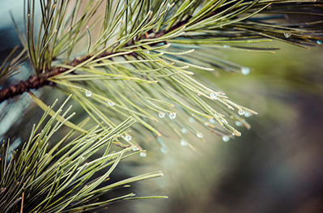

Site Name
Boondock Camping for Beginners
Purpose/Elevator Pitch
Because much of Utah’s land is owned by the Bureau of Land management, Utah might be the best state in the whole country for Boondock camping. So, what is boondock camping? Basically, it means camping in an unestablished area, with no bathrooms or water nearby. Why would anyone want to camp without bathrooms or running water you ask? It may not sound glamorous or enjoyable, but with a little planning and preparation you can gather the equipment needed to make camping off the grid a vacation to remember. Boondock camping allows you to escape the crowds and enjoy some of the most peaceful and spectacular views this state has to offer. My website will go over all you need to know about boondock camping. It will provide you with an equipment list of must have items to make off road camping and enjoyable experience. It will also map out locations of some of the best places to go boondock camping.
Target Audience and Scenarios
Target audience: The Boondock Camping for Beginners website will appeal to adults, both young and old, as well as family groups, and youth groups, who love to go camping.
- Scenario #1- A group of collage graduates going on a celebratory graduation trip.
- Scenario #2- A newly married couple going on an adventurous honeymoon camping trip.
- Scenario #3- Families with children going on an summer vacation.
- Scenario #4- A corporate business group taking their employees on a corporate retreat.
Site Logo
Site Color Scheme
Headings will be white. Sub-headings will be in Green. Body text will be black or dark-brown. Highlights and links will be in dark-green. Background will be in a light-green.

Site Typography
Typeface - Lato. Regular for the body copy, Bold for Sub-headings, and Black for Headings and Title.